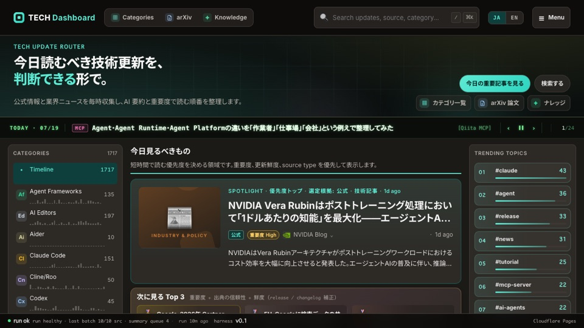

AIニュース / 自動化ポータル
TechDB
AIエコシステムの更新情報を14カテゴリで収集・要約し、読む順番や検索、運用状況を一か所にまとめる自動更新ポータルです。
公開根拠 自動収集データは、秘密情報検査・型検査・ユニットテスト・Web build・ブラウザーE2Eを通過した場合だけ公開用コミットへ進みます。
根拠を見る （新しいタブで開きます） ↗
AIニュース / 自動化ポータル
AIエコシステムの更新情報を14カテゴリで収集・要約し、読む順番や検索、運用状況を一か所にまとめる自動更新ポータルです。
公開根拠 自動収集データは、秘密情報検査・型検査・ユニットテスト・Web build・ブラウザーE2Eを通過した場合だけ公開用コミットへ進みます。
根拠を見る （新しいタブで開きます） ↗